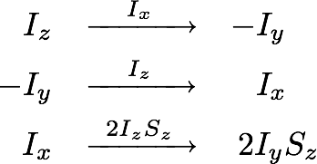

A group (G; •) is an algebraic structure, which consist of a finite or infinite set of elements
G on which an operation • is defined that combines any two elements and results in another element
of G. To qualify as a group the structure has to satisfy the group axioms:
- There exists exactly one identity element e ∈ G for which the equation e
• a = a • e = a holds for all a ∈ G
- For every element a ∈ G exists an inverse element a-1 such
that a • a-1 = a-1 • a = e.
- The associative law is satisfied so that (a • b) • c
= a • (b • c).
Commutativity is not required. Examples for groups are the real numbers with respect to addition (Z; +)
with the identity element 0, and the rational numbers (without zero) with respect to multiplication (Q\0; ⋅) with the
identity element 1. Finite groups are used to describe symmetries and rotations: G is a set of rotation
operations and the operation the successive application of two rotations, which is equal to a third rotation.
Of special interest in spin dynamics are groups of square matrices, which are
combined by matrix multiplication. These fulfil the requirements
of non-commuting operators in quantum
mechanics. Groups of interest for NMR are:
- GL(n) the general linear group of all invertible n x n matrices is the largest
possible set of square matrices that forms a group.
- SL(n) the special linear group includes all members of GL(n) with a determinant = 1.
- U(n) is the subgroup of GL(N) that comprises of all unitary matrices that have a
determinant = ±1 and do not change the norm of the vectors they are applied to.
- O(n) is the group of all orthogonal matrices with determinant = ±1, which make up
all rotation or inversion matrices.
- SO(3) the special orthogonal group in three dimensions is the group of all possible rotations in
real space with a determinant = 1, thus excluding inversions. It describes orbital angular momentum.
- SU(n) is the special unitary group of dimension n, which describes
spin. In contrary to spatial rotations a rotation by 360° is not necessarily equal to the identity
operator. In the case of SU(2) for spin 1/2 the original state is restored after a rotation by 720°.
Group theory is employed in NMR for describing precession and
pulses with the 4n product operators that
form the basis of the continuous operator space. They can represent states like the population of the
α-state Iz, the coherence in x-direction Ix or the
longitudinal two-spin order 2IzSz. The same operators
can also describe rotations if the operation • is the application of the left operator on the right operator
in Hilbert space in form of the sandwich formula

that results from the equation of motion. Such an operation always
results in another product operator and conserves the total angular momentum.
Relaxation destroys magnetisation and thus violates the group axioms, resulting in
a semigroup.
The application of product operators is usually written with the applied operator on top of a reaction arrow.
The equation Ix • Iz = -Iy appears as the first of the three following examples.

The identity element E/2 is the normalised identity matrix with the dimension of the spin system.